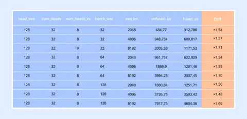
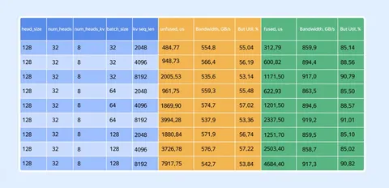

Генерация токенов в LLM часто упирается не в слабое железо, а в то, что вычисления организованы неоптимально. Андрей Шукшов (Яндекс R&D) рассказал на Хабре, почему так происходит, и показал способ насытить память GPU в режиме декодирования.
GPU и CPU: throughput vs latency
CPU оптимизированы для задач с низкой задержкой и сложной логикой. GPU делают ставку на параллелизм: тысячи более простых ядер выполняют одинаковые операции одновременно. Задержка DRAM скрывается за счёт большого числа потоков и высокой пропускной способности памяти. Это выглядит идеальным для LLM, в которых нужно одновременно выполнять триллионы однотипных операций. Главное тут — постоянно держать видеокарту полностью загруженной.
Как работает параллелизм на GPU
Казалось бы, CUDA даёт удобную модель с множеством независимых потоков, но на практике GPU работает варпами по 32 потока с одной инструкцией на всех. При расхождении веток варп последовательно исполняет обе, из-за чего часть потоков простаивает и теряется производительность.
SM внутри GPU
Streaming Multiprocessor (SM) — основная рабочая единица GPU. На видеокарте их больше сотни, и между ними распределяется вся работа. Внутри SM находятся CUDA Cores, Tensor Cores и быстрая Shared Memory. Чтобы всё работало, нужно давать достаточно параллельных задач и активно использовать быструю память, иначе SM будут простаивать или упираться в доступ к DRAM.
Декодер — худший сценарий для GPU
В режиме генерации модель выдаёт текст слово за словом. Каждый новый токен — это один вектор, который нужно умножить на весь накопленный KV-кэш предыдущих токенов. То, что в обучении выглядит как плотное умножение матрицы на матрицу (GEMM), в декодере превращается в умножение вектора на матрицу (GEMV). А это уже memory-bound-сценарий: вычислений мало, чтения из памяти много.
Аттеншн при этом состоит из трёх последовательных шагов:
1) Q @ Kᵀ;
2) Softmax;
3) умножение на V.
Если выполнять их как три отдельных кернела, результаты каждый раз записываются в глобальную память и снова читаются обратно. Для memory-bound-задачи это критично: мы трижды гоняем данные через DRAM и теряем пропускную способность.
Всё из-за софтмакса
Кажется логичным объединить всё в один кернел и не писать промежуточные результаты в память. Но софтмакс требует редукции по всей строке, потому что для подсчёта знаменателя, нужно увидеть все элементы. Это плохо сочетается с тайлингом, который используется для GEMM на уровне SM. Получается, софтмакс мешает в лоб зафьюзить все три операции.
Online Softmax и fused kernel
Решение — Online Softmax, с которым софтмакс можно считать итеративно. Данные обрабатываются частями, и софтмакс встраивается внутрь одного fused kernel`а.
Теперь тайлы K и V загружаются из DRAM в Shared Memory, внутри SM считается часть Q @ Kᵀ, на лету обновляется Online Softmax и сразу же домножается на V. Всё происходит в одном кернеле, без лишних обращений к глобальной памяти. Вместо трёх поездок «на склад» достаточно одной.
Результаты
Fused kernel даёт ускорение минимум в 1,5 раза по сравнению с тремя стандартными вызовами.
Главная метрика для memory-bound задач — утилизация пропускной способности памяти. В эксперименте она доходит до 85–91% от теоретического пика. Это значит, что алгоритм практически полностью насыщает шину памяти и упирается в физический предел железа.
Полное описание эксперимента, разбор архитектуры SM с деталями и замерами, а также выводы от автора — в хабростатье.
ML Underhood

